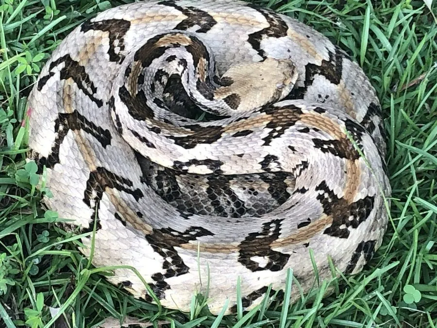

爬行动物 · 动物界
森林响尾蛇 Crotalus horridus

北美东部的响尾蛇，体色似枯木、尾部有响环，栖息于森林与岩石山地，毒性较强，被咬须立即就医。
- 分类
- 门脊索动物门纲爬行纲目有鳞目科蝰科属响尾蛇属
- 栖息环境
- 美国东部的森林、岩石山地、灌丛与河谷
- 地理分布
- 美国东部和中部地区
- 保护级别
- IUCN 无危（LC）；非中国原产，在中国无保护级别
物种志
森林响尾蛇体长 0.9–1.5 米，身体较粗壮，头部呈三角形，颊部有颊窝；体色以黄褐、灰褐或暗褐色为底，背部有一系列深色斑块或横带，尾端呈黑色并带有角质响环，整体花纹像枯木和落叶，具有很好的隐蔽效果。
它分布于美国东部和中部，栖息于森林、岩石山地、灌丛和河谷，多在夏季夜间和晨昏活动，冬季在岩洞中集体越冬，捕食鼠类、鸟类、蛙类和其他小型动物。它是卵胎生蛇类，每胎产 6–20 条幼蛇。森林响尾蛇毒性较强，被咬后可能出现剧痛、肿胀和血液系统症状，须立即就医；它性情相对安静，受到惊扰时会先摇动响环示警，野外遇到时保持距离即可。
形态与习性
- 食性鼠类、鸟类、蛙类和小型动物
- 体长0.9–1.5 m
- 寿命约 15–20 年
- 繁殖卵胎生，每胎 6–20 条
- 活动节律夏季夜间和晨昏活动，冬季在岩洞越冬
- 毒性毒性较强，被咬须立即就医
趣味知识
- 森林响尾蛇的花纹像枯木和落叶，停在林地上很难被发现。
- 冬季多条响尾蛇会在同一个岩洞中集体越冬。
- 它受惊时先摇动响环示警，给人留出退让的时间。